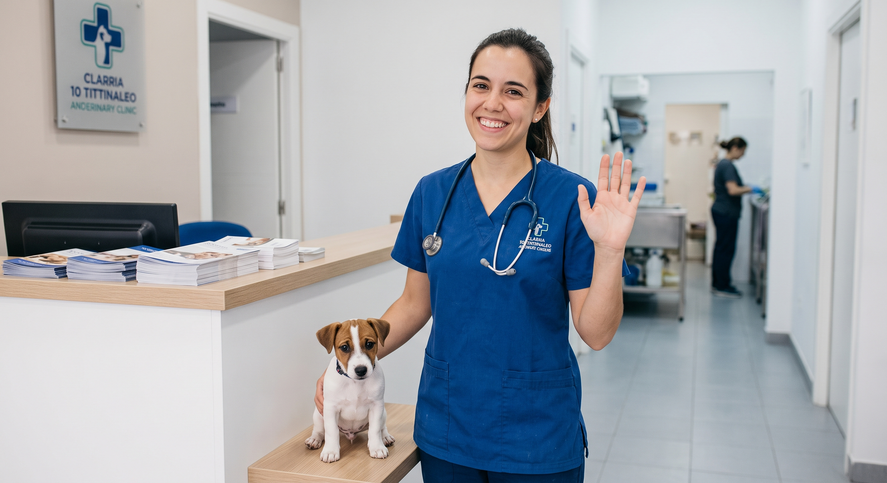
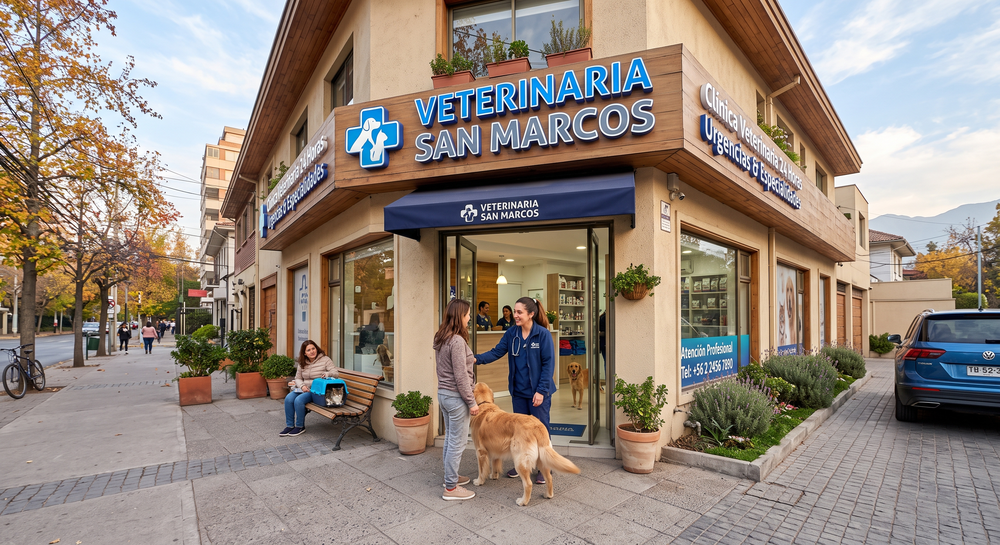
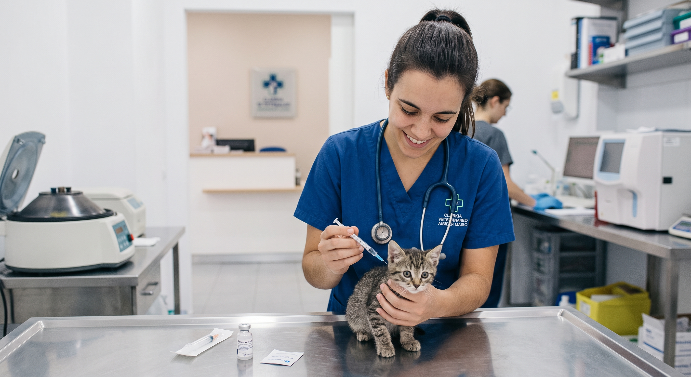
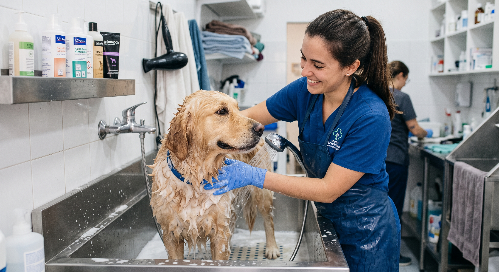
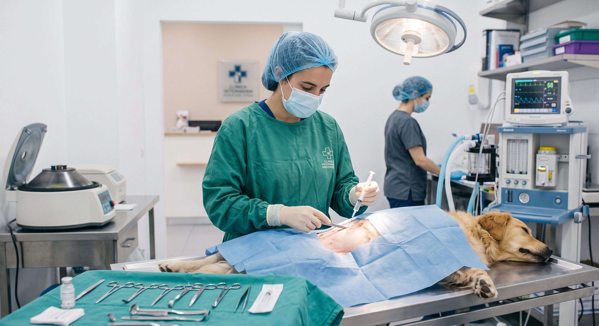

Consulta General
Revisiones preventivas, diagnósticos completos y planes de salud personalizados.
Ver más
Atención médica profesional, preventiva y de urgencia los 365 días del año en Rancagua.


Revisiones preventivas, diagnósticos completos y planes de salud personalizados.
Ver más
Protege a tus perros y gatos con calendarios de inmunización al día.
Ver más
Higiene y estética con productos dermatológicos especiales para su piel.
Ver más
Pabellón equipado y exámenes rápidos para diagnósticos certeros.
Ver más